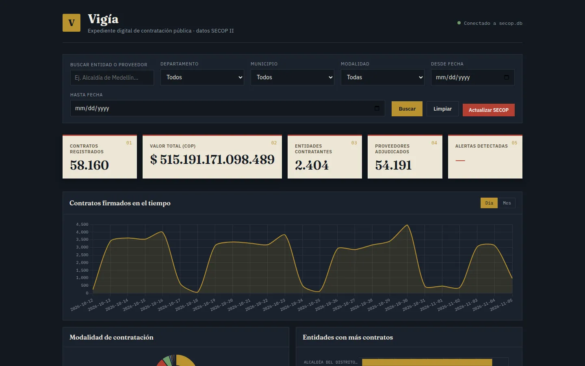
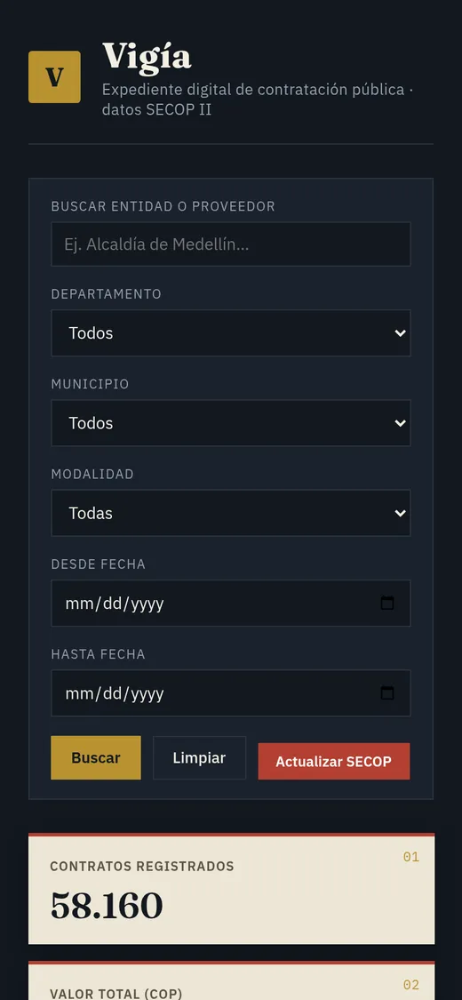

Vigía
Expediente de contratación pública con datos abiertos de SECOP II
Un prototipo de monitoreo ciudadano que reúne los contratos públicos de Colombia en un solo expediente: filtros por entidad, departamento, municipio, modalidad y fechas; gráficas de contratos en el tiempo, rankings de entidades y proveedores, y un sistema de alertas de riesgo. Las cifras salen directamente del dataset público y no constituyen una acusación contra nadie.
- Contratos
- 58.160
- Entidades
- 2.404
- Proveedores
- 54.191
- SECOP II
- Datos abiertos
- Base de datos
- Dashboards
- Render


Datos de SECOP II consultados en nov. 2026 · ≈ $515 billones COP en contratos